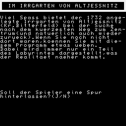

IM IRRGARTEN VON ALTJESSNITZ
Viel Spass bietet der 1732 angelegte
Irrgarten von Altjessnitz (Kr.Bitterfeld)
bei der Suche nach dem kuerzesten Weg
zum Zentrum (und natuerlich auch wieder
zurueck). Wenn Sie noch nicht
dort waren, koennen Sie mit diesem
Programm etwas ueben.
Dabei wird immer nur ein Teil
des Labyrintes dargestellt, was
der Realitaet naeher kommt.